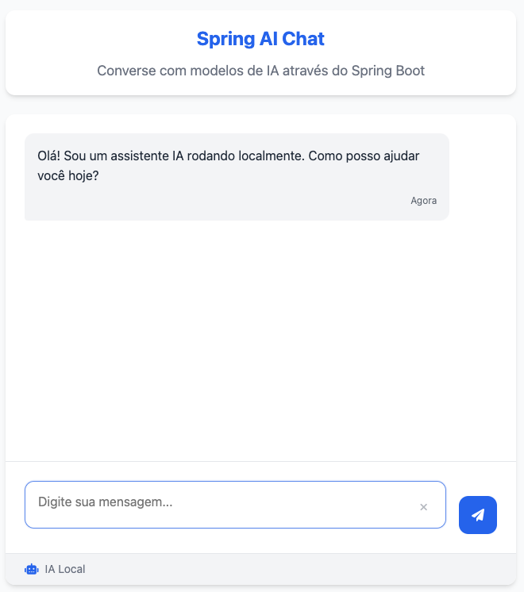

ü§ñ Spring AI Local Chat
ℹ️ Sobre o Projeto
Spring AI Local Chat é uma aplicação open source que demonstra, de forma didática e profissional, como integrar modelos de linguagem (LLMs) locais em aplicações Java/Spring Boot usando Spring AI e Ollama.
Privacidade, controle e IA generativa local: rode modelos de IA no seu próprio ambiente, sem depender de nuvem ou expor seus dados!
üéØ Objetivo
- Demonstrar como criar um chat com IA local usando Spring Boot + Ollama
- Expor uma @Tool para o LLM, permitindo que ele chame APIs externas durante a conversa
- Oferecer uma base para prototipação, estudo e uso real de IA generativa local
üõ†Ô∏è Tecnologias Utilizadas
üîó Links Úteis
⚙️ Como funciona?
- Você faz perguntas via interface web ou API REST
- O Spring AI envia o prompt para o modelo LLM rodando localmente via Ollama
- Se a pergunta envolver países, o LLM pode acionar a @Tool
getCountrypara buscar dados em uma API externa - O resultado é exibido no chat, mostrando a resposta do modelo ou da ferramenta
üöÄ Como executar (resumido)
- Suba o Ollama:
docker-compose up -d - Baixe um modelo:
docker exec -it spring-ia-local-example-ollama-1 ollama pull qwen2.5:0.5b - Rode a aplicação:
./mvnw spring-boot:run - Acesse http://localhost:8080 (web) ou /api/chat (API)
üíª Interface Web
Converse com a IA local de forma visual e moderna:
❓ Perguntas Frequentes
- Preciso de internet para usar? Não! O modelo roda localmente, só precisa de internet para baixar o modelo na primeira vez.
- Quais modelos posso usar? Qualquer modelo suportado pelo Ollama, como qwen2.5, llama2, mistral, codellama, phi2, gemma, etc.
- O LLM pode buscar dados externos? Sim! Com a @Tool exposta, o modelo pode agir como agente e consultar APIs externas.
- É seguro? Sim, tudo roda localmente e seus dados não saem do seu ambiente.